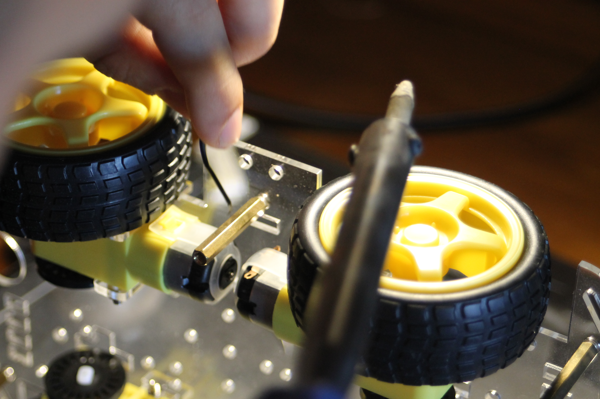

Carro Arduino
Carro a sensores infravermelhos
Este projeto foi desenvolvido para a cadeira de Multimédia Tangível na licenciatura, foi lhe atribuida a nota de 18 valores. Este carro é composto po 4 motores Dc, todavia a sua preparação foi feita em Blender, depois foi preparada para ir a máquina Prusa MINI, com filamento de 0.15mm. No entanto o carro é composto por um sensor ultrasónico e de infravermelhos para poder movimentar-se. Todavia introduzi na placa arduino, com um shield de distribuição para os quatro motores, soldei alguns pins que a placa não tinha.

